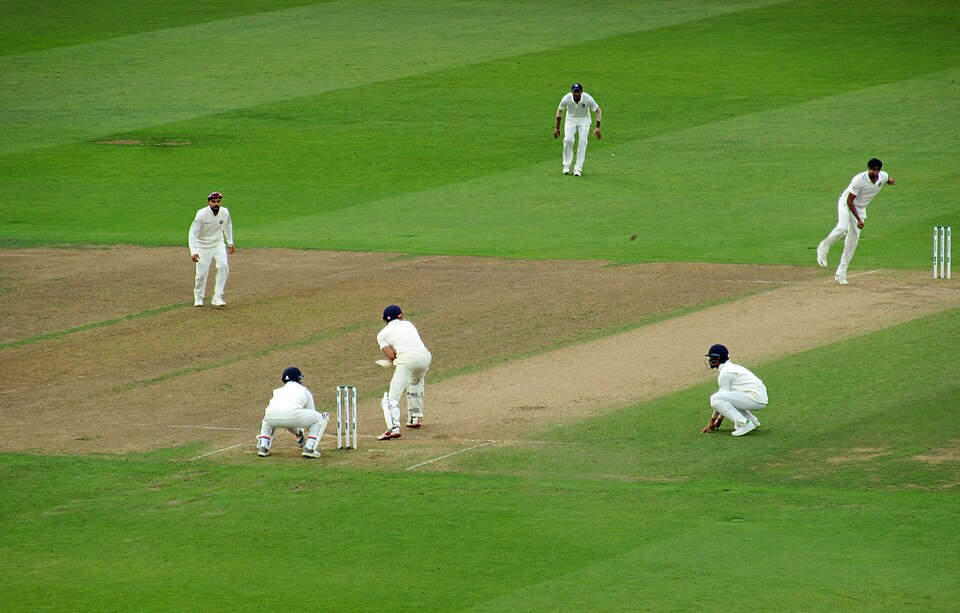
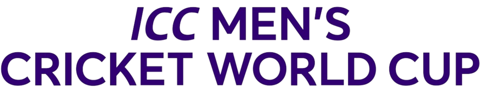

खेल
 खेल
खेलराइजिंग स्टार्स एशिया कप: नेपाल के खिलाफ आज होगा इंडिया ए का पहला मुकाबला
राइजिंग स्टार्स एशिया कप में तिलक वर्मा की कप्तानी वाली इंडिया ए टीम आज नेपाल के खिलाफ अपने अभियान की शुरुआत करेगी। दोहा में खेले जाने वाले इस वनडे टूर्नामेंट में कई युवा खिलाड़ियों पर नजरें रहेंगी।
 खेल
खेलयुजवेंद्र चहल ने टी20 क्रिकेट में पूरे किए 400 विकेट, ऐसा करने वाले पहले भारतीय गेंदबाज बने
भारत के लेग स्पिनर युजवेंद्र चहल ने टी20 क्रिकेट में 400 विकेट का आंकड़ा पार कर लिया है। वह इस मुकाम पर पहुंचने वाले पहले भारतीय गेंदबाज बन गए हैं।
 खेल
खेलएमएस धोनी के आईपीएल मेंटॉर बनने पर वीरेंद्र सहवाग का बड़ा बयान
पूर्व भारतीय क्रिकेटर वीरेंद्र सहवाग का कहना है कि आईपीएल 2027 में चेन्नई सुपर किंग्स के मेंटॉर की भूमिका संभालने के बाद एमएस धोनी पर टीम के प्रदर्शन और संयोजन को लेकर अधिक दबाव रहेगा।

खेलजसप्रीत बुमराह टेस्ट क्रिकेट में भारत के 10वें सबसे ज्यादा विकेट लेने वाले गेंदबाज बने
तेज गेंदबाज जसप्रीत बुमराह ने वेलिंगटन टेस्ट में टॉम ब्लंडेल को आउट कर जवागल श्रीनाथ का रिकॉर्ड पीछे छोड़ा। वह भारत के लिए टेस्ट में 10वें सबसे सफल गेंदबाज बन गए हैं।
 खेल
खेलमोहम्मद सिराज को पहले टेस्ट से बाहर रखने पर गावस्कर और शास्त्री ने उठाए सवाल
न्यूज़ीलैंड के खिलाफ पहले टेस्ट मैच की प्लेइंग इलेवन में तेज गेंदबाज मोहम्मद सिराज को शामिल न किए जाने पर सुनील गावस्कर और रवि शास्त्री समेत कई दिग्गजों ने हैरानी जताई है।
 खेल
खेलमोहम्मद सिराज को प्लेइंग इलेवन से बाहर करने पर सुनील गावस्कर ने जताई नाराजगी
भारतीय टीम के पहले टेस्ट मैच की प्लेइंग इलेवन में तेज गेंदबाज मोहम्मद सिराज को शामिल नहीं किए जाने पर दिग्गज क्रिकेटर सुनील गावस्कर ने हैरानी और नाराजगी जताई है।
खेलवाराणसी अंतरराष्ट्रीय क्रिकेट स्टेडियम का निर्माण लगभग पूरा, जय शाह ने किया निरीक्षण
आईसीसी अध्यक्ष जय शाह और बीसीसीआई सचिव देवजीत सैकिया ने वाराणसी के नए अंतरराष्ट्रीय क्रिकेट स्टेडियम का निरीक्षण किया। ₹450 करोड़ की लागत से बने इस स्टेडियम में दिसंबर में मैच होने की संभावना है।
खेलभारत-न्यूजीलैंड पहला टेस्ट: बुमराह की घातक गेंदबाजी से न्यूजीलैंड की आधी टीम 70 रन पर ढेर
वेलिंगटन टेस्ट में भारत के खिलाफ न्यूजीलैंड की शुरुआत बेहद खराब रही है। तेज गेंदबाज जसप्रीत बुमराह के तीन विकेट की बदौलत मेजबान टीम ने 70 रन पर अपने पांच विकेट गंवा दिए हैं।
खेलभारत-न्यूजीलैंड पहला टेस्ट: शुरुआती झटकों के बाद कीवी टीम ने संभाला मोर्चा
वेलिंगटन टेस्ट के पहले दिन भारतीय गेंदबाजों ने शुरुआती सत्र में शानदार प्रदर्शन करते हुए न्यूजीलैंड के 5 विकेट मात्र 70 रन पर गिरा दिए, जिसके बाद कीवी बल्लेबाजों ने वापसी की कोशिश की।

खेलधीमी ओवर गति के कारण टीम इंडिया पर लगा जुर्माना, आईसीसी ने की कार्रवाई
न्यूजीलैंड के खिलाफ पांचवें वनडे में धीमी ओवर गति के लिए आईसीसी ने भारतीय टीम पर मैच फीस का 35 प्रतिशत जुर्माना लगाया है। स्टैंड-इन कप्तान श्रेयस अय्यर ने सजा स्वीकार कर ली है।
 खेल
खेलएमएस धोनी के आईपीएल संन्यास पर सचिन तेंदुलकर ने दी प्रतिक्रिया
सचिन तेंदुलकर ने एमएस धोनी के आईपीएल संन्यास पर प्रतिक्रिया देते हुए उनकी पावर हिटिंग और शानदार करियर की सराहना की। चेन्नई सुपर किंग्स ने हाल ही में धोनी के मेंटॉर बनने का ऐलान किया था।